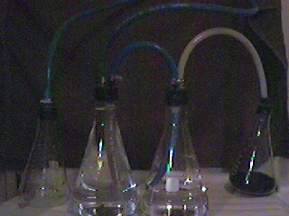

fzr96's Push/Pull Variation
HTML by toast

"ok this is how i do push and pull i use generic 60 miligram sufeds from walgreens i throw them in a blender then i throw in some denatured alcohol roughly 5 times the amount of denatured to pills then i turn on mixer for about 2 minutes then i let it sit for around and hour then siphon off liquid.next i use 1 coffee filter to filter with.usually need to filter 3 to 4 times till liquid is clear.then pour liquid into a pie pryex dish set on the stove at low heat and have a fan blownig air across the top make sure you dont burn your sudeo. nexti put sudeo in reaction vessel then red p and then dh20 just enough dh20 to slightly moisten next i add I2 then quickly stopper reaction vessel cause reaction happens right away make sure you duct tape stopper good then i stir reaction vessel every 5 minutes for a half and hour then ill turn electric burnner till 150 degrees is reached and place reaction vessel in metal pot using candy thermomentor to find out temp then every 5 minutes i take off heat and stir reaction vessel i do this for a half and hour then ill turn up temp to 175 degrees taking off heat every 5 minutes and stirring reaction vessel i keep doing this till you see smoke inside the reaction vessel when it starts to smoke take off heat and stir water will begin to pull i keep stiring for around 15 minutes then let reaction vessel cool down for about 20 minutes. the ratio goes like this 1 part i2 to one part sudeo to 1/2 part rp another words lets say 28 grams of I2 to 28 grams of sudeo to 14 grams of rp. mix up a dh20 lye solution 50% dh20 to 50% lye mix good till lye is completely disovled when you mix dh20 with lye it gets very hot so let it cool off.ok add dh20 to reaction vessel i add doulbe the amount of dh20 to reaction ingridents and shake and stir vessel good then run through coffee filters till its a golden color then add 3 times the amount of charcoal lighter fluid then add dh20 lye solution till the bottom layer reaches a ph of 14 dont really have to worry about over phing because solvent protects your honey water.then i use one of those hand jucice blendersto stir works really good stir for 2 minutes then i let it sit for 3 hours then using a sep funnel i retrieve solvent add equl amount of dh20 mix good then add drops of muratic acid till a get a ph of 6.8 then evoporate water with heat lamp and bingo honey"
last updated: 6/30/99